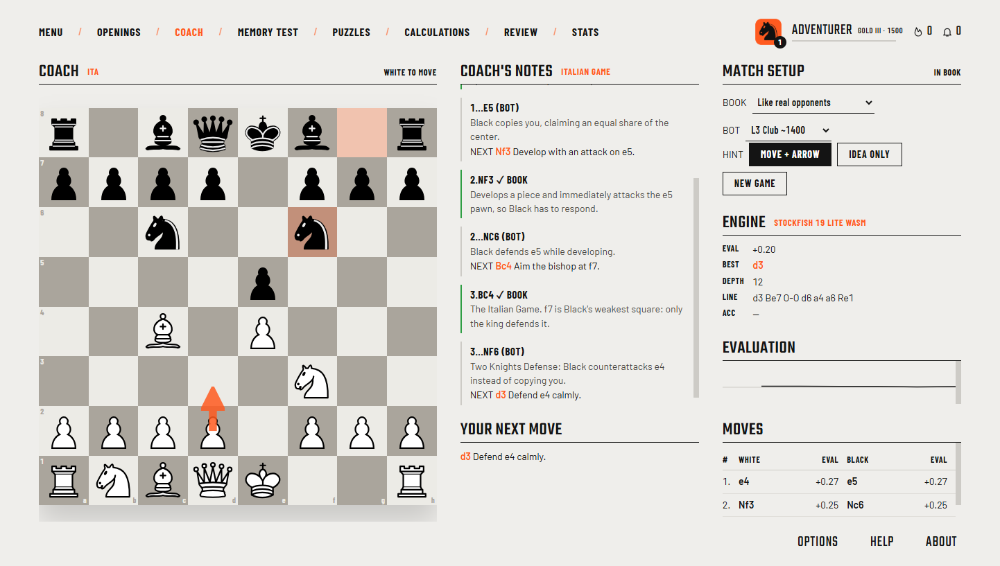
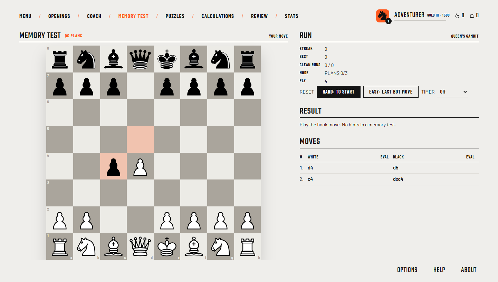
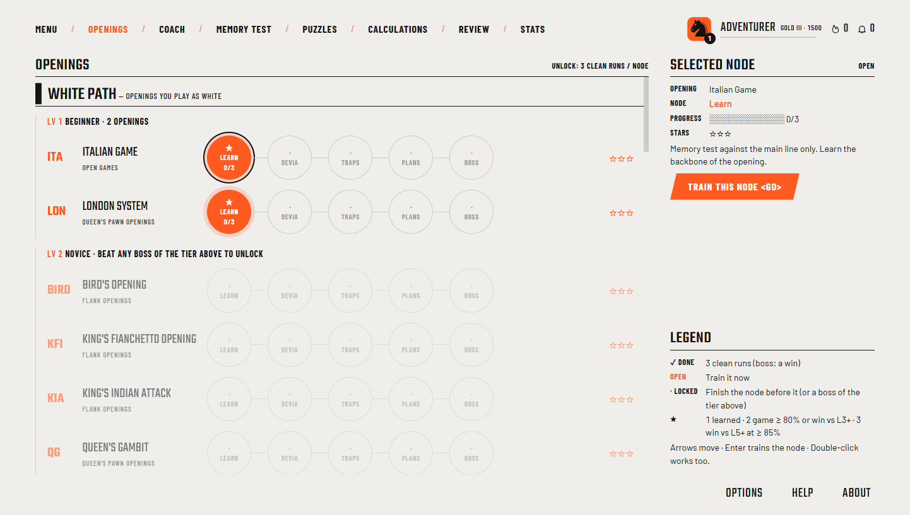
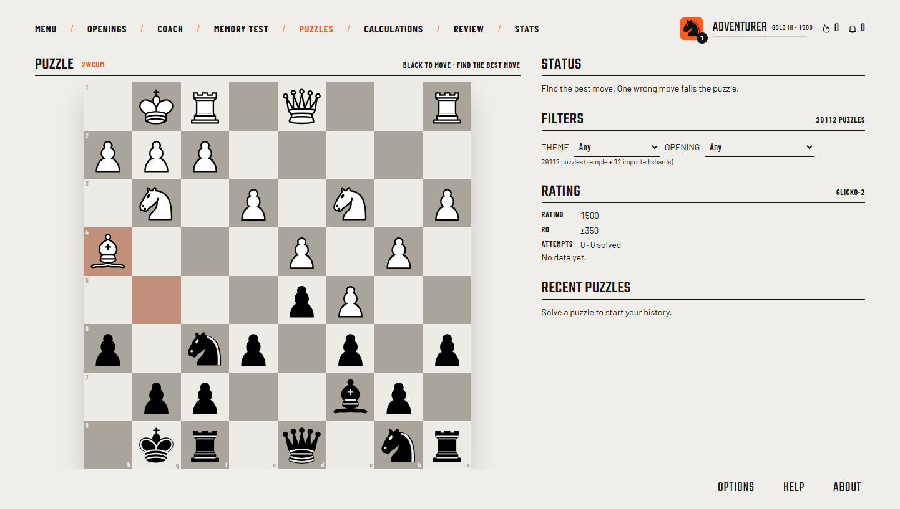
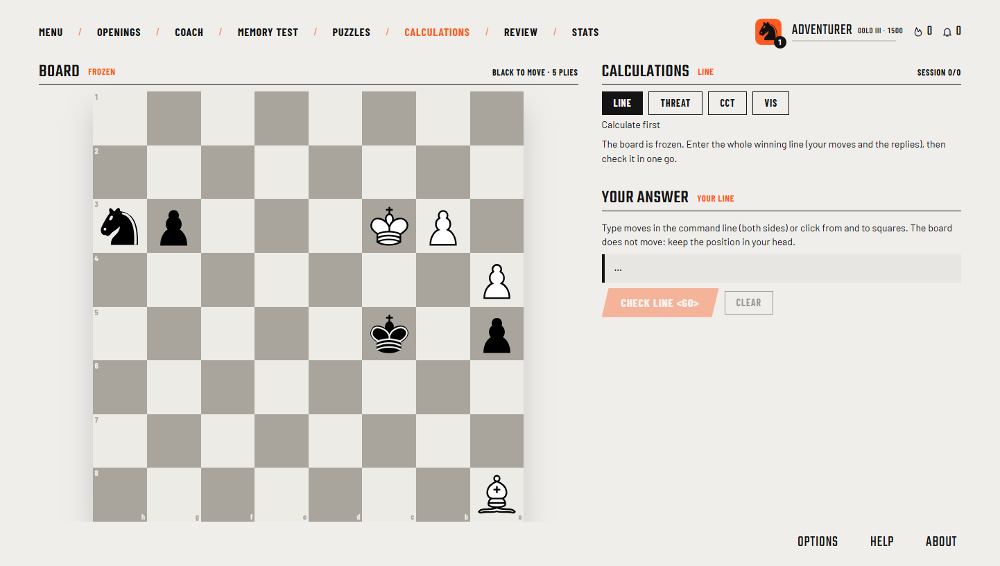
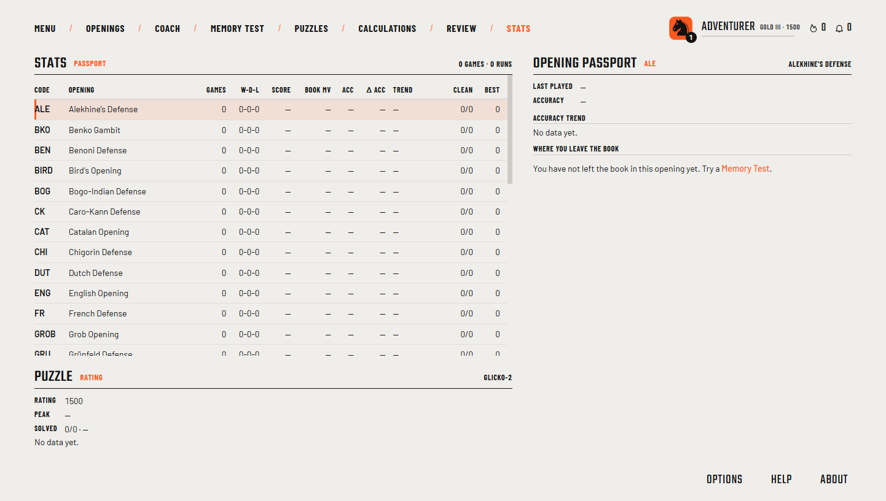

Coach
Play an opening against the bot, with an explanation for every move and Stockfish grading once the book runs out.
Case study · Desktop app
Learn chess openings like a game, with a coach that explains every move and a boss at the end of every opening.

The main menu. Every screen is real, no mockups.
The 30-second version
A desktop app that coaches you through openings, tests you from memory and turns your mistakes into review. It runs entirely on your computer, with Stockfish built in and no account or server.
The problem
Most opening training is memorising lists of moves. You learn what to play but not why, so you're lost as soon as your opponent goes off-script.
What I built

Play an opening against the bot, with an explanation for every move and Stockfish grading once the book runs out.

No hints, one mistake ends the run, and the lines you miss come up more often.

33 openings in five tiers, each ending with a boss that unlocks the next tier.

Lichess puzzles plus puzzles mined from your own games.

Drills for thinking ahead, like playing a whole line on a frozen board.

Mistakes become spaced-repetition cards, and stats show where you usually leave the book.
How it's built
The chess and training rules are small, pure, tested functions. The React screens stay thin.
Electron
Sandboxed window, no Node in the UI.
React 18 + Zustand
10 screens: Coach, Memory test, Map, Puzzles and more.
src/core
Stockfish × 2
One grades, one plays.
IndexedDB
Games, reviews, ratings.
Content
33 validated opening files.
The hard parts
01
Packaged Electron apps can't load WebAssembly from file://. I serve the UI through a custom app:// scheme and check the engine loads in the installed app.
02
The installer was copying every Stockfish build. Now it ships only the two engine files the app needs.
03
A validator replays every opening line and rejects illegal moves or missing explanations, in CI and at startup.
How I worked
What I learned
What's next
I'm looking for a full-time job (CDI) in software or AI engineering.